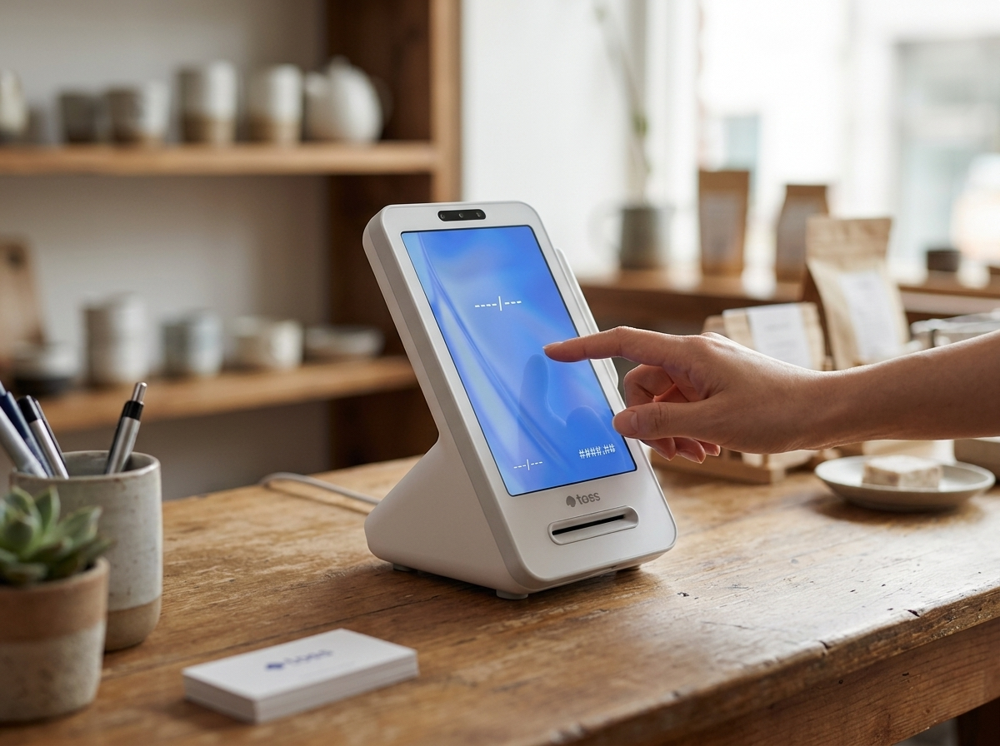

결론부터 말씀드리면, 가게를 접기로 결정했다면 '조용히 문만 닫는 것'이 아니라 폐업신고·세금 정리·각종 해지까지 순서대로 마무리해야 뒤탈이 없습니다. 정리를 제대로 하지 않으면 세금이나 보험료가 계속 나오거나, 나중에 새로 시작할 때 불이익이 생길 수 있기 때문입니다. 저희 누리네트웍스는 9,400여 곳의 결제 현장을 함께해 오며, 새로 여는 사장님뿐 아니라 아쉽게 정리하는 사장님도 곁에서 도와드렸습니다. 이 글은 폐업이 결코 실패가 아니라 다음을 위한 정리라는 마음으로, 빠뜨리기 쉬운 항목을 정리했습니다. 다만 세금·행정 절차는 상황마다 다르므로 공식기관 확인을 꼭 권해드립니다.
폐업은 생각보다 챙길 것이 많습니다. 가장 중요한 것은 폐업신고입니다. 사업을 정리하면 세무서나 홈택스를 통해 폐업신고를 해야 하며, 이를 미루면 사업자등록이 살아 있는 것으로 처리돼 불필요한 부담이 이어질 수 있습니다.
또한 부가가치세 확정신고를 잊지 말아야 합니다. 폐업한 사업자도 폐업일이 속한 기간에 대해 부가세를 신고·납부해야 하며, 이를 놓치면 가산세가 붙을 수 있습니다. 직원을 두었다면 4대보험 상실신고도 필요하고, 임대·통신·결제 단말 등 각종 계약 해지도 순서대로 진행해야 합니다. 하나라도 빠지면 요금이나 보험료가 계속 청구될 수 있으니 목록을 만들어 하나씩 지워 가시길 권합니다.
아래는 폐업 시 흔히 챙기는 항목을 정리한 개념 안내입니다. 실제 절차와 기한은 상황에 따라 다르므로 참고용으로만 봐 주세요.
| 항목 | 내용 | 확인처 |
|---|---|---|
| 폐업신고 | 사업자등록 폐업 처리 | 국세청 홈택스·세무서 |
| 부가세 확정신고 | 폐업 기간 부가세 신고·납부 | 국세청 홈택스 |
| 4대보험 상실신고 | 직원 보험 정리 | 근로복지공단 등 |
| 계약 해지 | 임대·통신·결제단말 등 | 각 계약처 |
| 재고·집기 처리 | 매각·양도·폐기 | 중고 거래 등 |
특히 세금 관련 신고 기한은 놓치기 쉽습니다. 폐업 후 정신없는 와중에 신고를 미루다 가산세를 무는 경우가 있으니, 폐업을 결정하면 세무사나 국세청 국세상담센터(126)에 미리 문의해 일정을 확인하시길 권합니다. 폐업 절차와 필요 서류는 국세청 홈택스, 소상공인시장진흥공단 등 공식기관 안내를 기준으로 확인하는 것이 가장 안전합니다.

폐업은 끝이 아니라 정리입니다. 정리를 잘해 두면 다음 시작이 훨씬 가볍습니다. 몇 가지 챙길 점을 정리합니다.
첫째, 재고와 집기를 현명하게 처리합니다. 아직 쓸 만한 주방기기·집기·단말기는 중고로 넘기거나 다음 매장에서 재사용할 수 있습니다. 무작정 폐기하기 전에 활용 방법을 살펴보세요. 둘째, 정부의 폐업·재기 지원 제도를 확인합니다. 소상공인의 폐업과 재도전을 돕는 지원 사업이 운영되는 경우가 있습니다. 대상·내용·신청 방법은 해마다 달라지므로 소상공인시장진흥공단(소상공인24)에서 현재 열려 있는 제도를 직접 확인하시길 권합니다. 셋째, 서류를 보관합니다. 폐업 후에도 세금·정산 관련 문의가 올 수 있으니, 매출 자료와 신고 서류는 일정 기간 잘 보관해 두세요.
누리네트웍스는 수도권을 직접 방문해 설치·관리하는 결제 단말·포스 전문 업체입니다. 매장을 정리하실 때 결제 단말 해지·반납 같은 절차도 당황하지 않도록 안내해 드리고, 언젠가 다시 시작하실 때 다시 든든하게 함께하겠습니다. 정품 기기와 거품을 뺀 직접 공급가라는 원칙은 새로 여는 순간에도 그대로입니다. 토스단말기·네이버단말기는 월 0원·약정 없음으로, 다시 출발하실 때 부담을 크게 덜어 드립니다.
Q. 그냥 문만 닫고 폐업신고를 안 하면 어떻게 되나요?
사업자등록이 살아 있는 것으로 처리돼 세금 신고 의무가 이어지고, 방치하면 가산세 등 불이익이 생길 수 있습니다. 반드시 폐업신고를 진행하시고, 절차는 국세청 홈택스·세무서에서 확인하세요.
Q. 폐업하면 부가세를 안 내도 되나요?
아닙니다. 폐업한 사업자도 폐업 기간에 대한 부가세 확정신고·납부 의무가 있습니다. 기한을 놓치면 가산세가 붙을 수 있으니, 국세청이나 세무사에 신고 시기를 꼭 확인하세요.
Q. 폐업 지원금 같은 제도가 정말 있나요?
소상공인의 폐업·재기를 돕는 지원 사업이 운영되는 경우가 있습니다. 다만 대상과 내용, 신청 기간이 해마다 바뀌므로, 소상공인시장진흥공단(소상공인24)에서 현재 기준을 직접 확인하시는 것이 정확합니다.
폐업은 아쉬운 일이지만, 잘 정리하면 다음을 위한 든든한 발판이 됩니다. 결제 단말 정리부터 다시 시작하는 순간까지, 누리네트웍스가 매장 곁에서 함께하겠습니다. 수도권 어디든 직접 방문해 상담해 드리니, 부담 없이 문의 주세요.
이미지1-매장: 오후, 정리 중이지만 밝고 담담한 표정의 30대 사장님이 있는 소품·잡화 매장 장면
이미지2-제품: 카운터 위 토스단말기(토스 프론트)를 가까이서 담은 제품 컷
이미지3-사용: 사장님이 토스단말기 화면을 정리·확인하는 차분한 순간